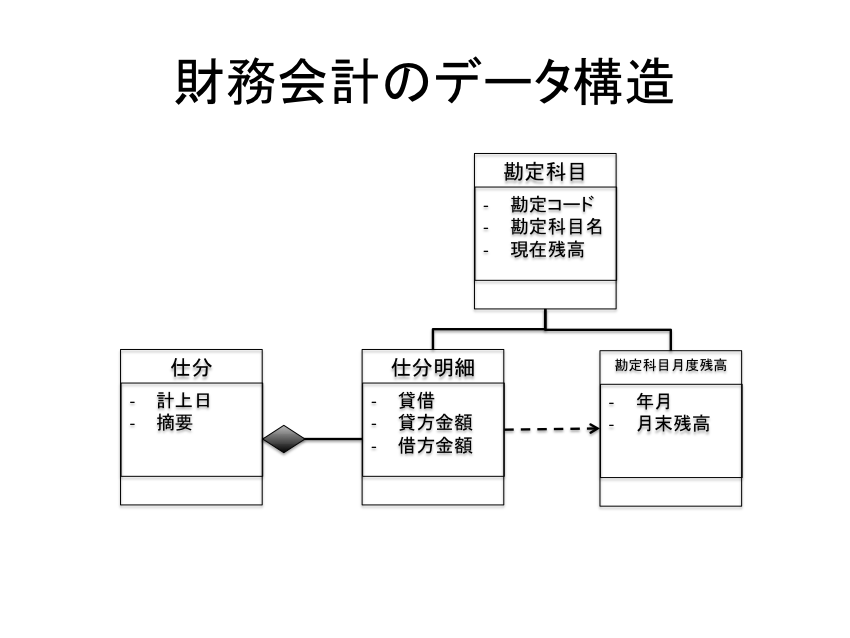
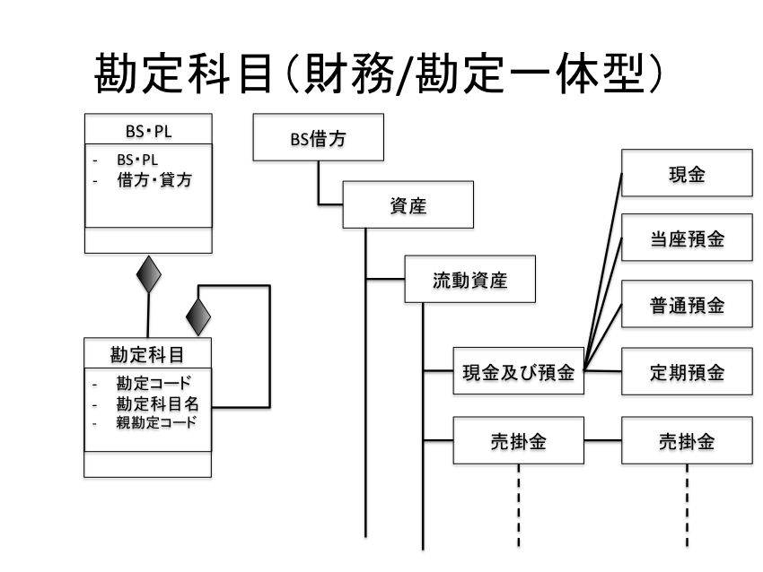
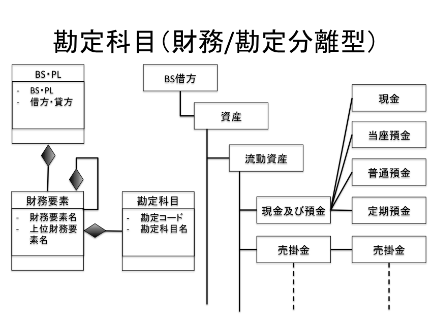
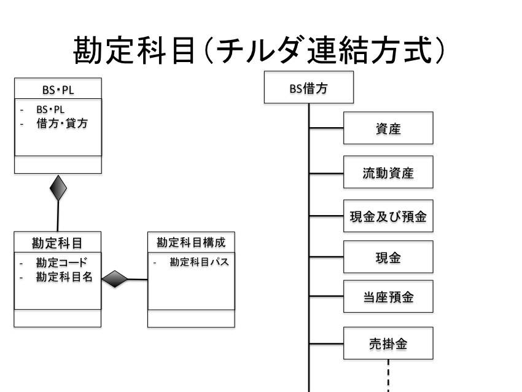
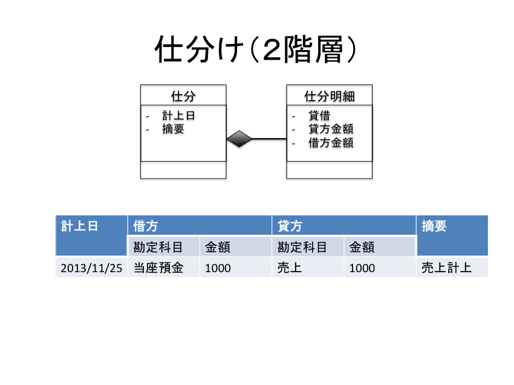

財務会計システムをRailsで実装する
| ソフトウェア | バージョン | 備考 | |:---------------|:-------------|:------------| | OS X |10.8.5 | | | ruby |1.9.3-p392 | | | rails |3.2.13 | | | bootstrap |3.0.2 | | | rspec |2.0 | | | cucmber |1.3.1 | |
利害関係者にお金を幾ら持っていて幾ら使って幾ら稼いだかを知ってもらうための記録・計算・管理プロセス






$ rvm use ruby-1.9.3-p392
$ rvm gemset create rails_accounting
$ rvm use ruby-1.9.3-p392@rails_accounting
$ bundle
$ rails new chap2-2-1 -m ./app_template.rb
$ cd chap2-2-1
$ rails g i18n ja
$ rails g scaffold account bs_pl_division:string debit_credit_division:string code:string name:string parent_code:string
$ rake db:migrate
１つのシナリオに焦点をあわせる
失敗するステップ定義を書く
失敗するサンプルを書く
サンプルを成功させる
リファクタリング
$ rails new chap2-2-2 -m ./app_template.rb
$ rails new chap2-2-3 -m ./app_template.rb
$ rails new chap2-3-1 -m ./app_template.rb
$ rails new chap2-3-1 -m ./app_template.rb